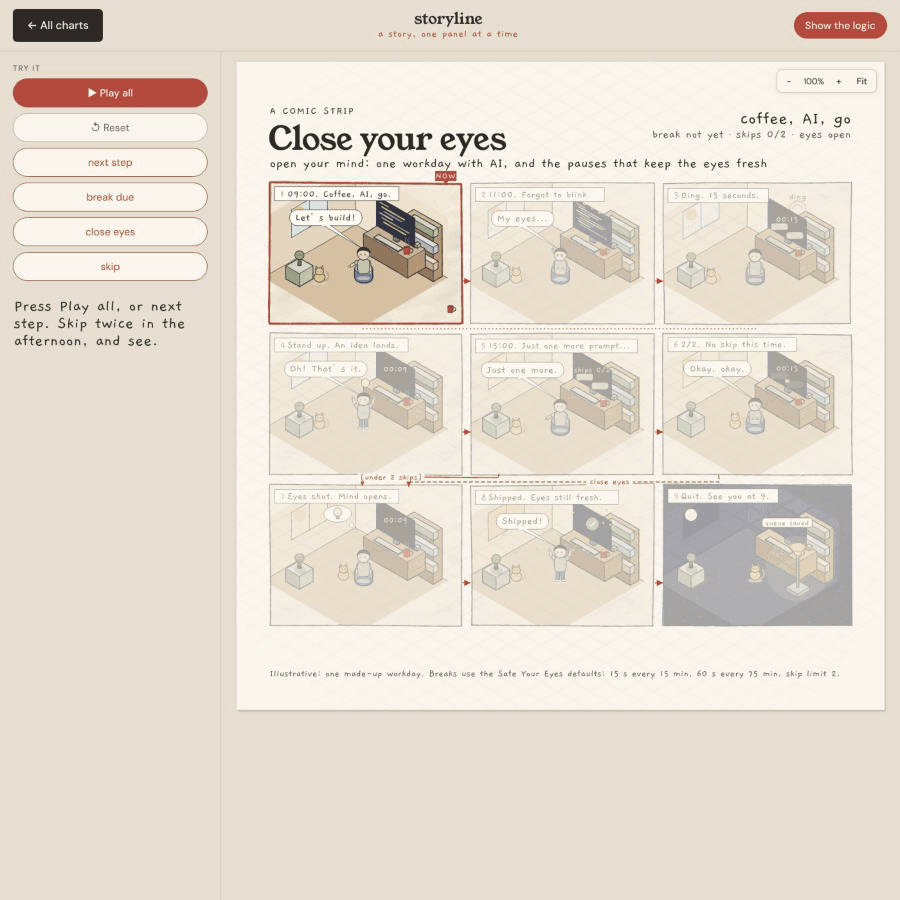
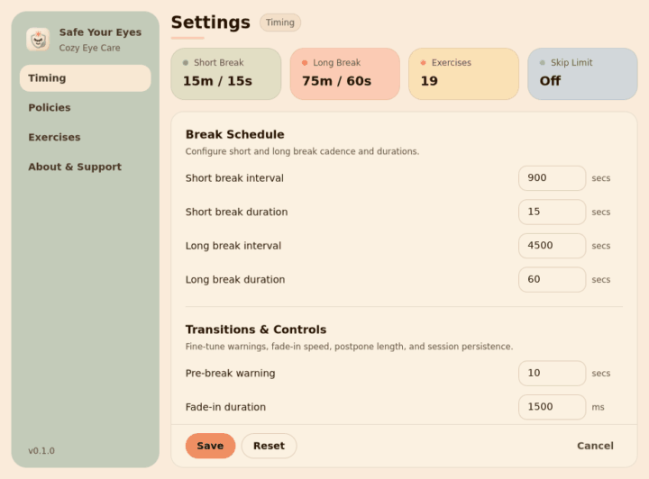

Gentle Break Cadence
15-minute / 15-second short breaks and 75-minute / 60-second long breaks (4:1 ratio), pre-break notices, synthesized chimes, and a 2-second key lock.
A lightweight, cross-platform Rust desktop application that reminds you to take short and long eye breaks, with native controls, 0% idle GPU usage, Smart Pause, Do Not Disturb, and no administrator privileges required.

15-minute / 15-second short breaks and 75-minute / 60-second long breaks (4:1 ratio), pre-break notices, synthesized chimes, and a 2-second key lock.
Smart Pause when idle, Do Not Disturb for fullscreen apps or battery power, strict break mode, skip limits, and user-level OS login autostart.
Single binary with no Tokio runtime. The background daemon spawns native UI subprocesses only during breaks or Settings.
Runs in user space with per-user config, session, IPC socket, and login startup entries on Windows, macOS, and Linux.
Customize break intervals, policies, exercises, theme (Light, Dark, or System), and login autostart with native OS controls.

Free code signing provided by SignPath.io, certificate by SignPath Foundation.
This program will not transfer any information to other networked systems unless specifically requested by the user or the person installing or operating it.